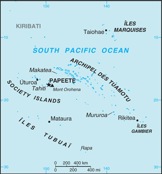
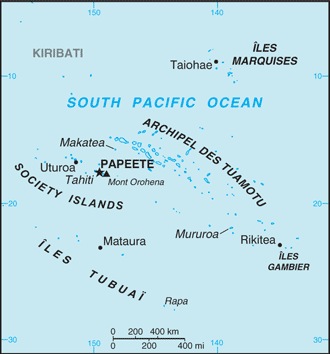

Australia-Oceania :: FRENCH POLYNESIA
Introduction :: FRENCH POLYNESIA
-
The French annexed various Polynesian island groups during the 19th century. In September 1995, France stirred up widespread protests by resuming nuclear testing on the Mururoa Atoll after a three-year moratorium. The tests were halted in January 1996. In recent years, French Polynesia's autonomy has been considerably expanded.
Geography :: FRENCH POLYNESIA
-
Oceania, five archipelagoes (Archipel des Tuamotu, Iles Gambier, Iles Marquises, Iles Tubuai, Society Islands) in the South Pacific Ocean about halfway between South America and Australia15 00 S, 140 00 WOceaniatotal: 4,167 sq km (118 islands and atolls; 67 are inhabited)land: 3,827 sq kmwater: 340 sq kmcountry comparison to the world: 175slightly less than one-third the size of Connecticut0 km2,525 kmterritorial sea: 12 nmexclusive economic zone: 200 nmtropical, but moderatemixture of rugged high islands and low islands with reefsmean elevation: NAelevation extremes: lowest point: Pacific Ocean 0 mhighest point: Mont Orohena 2,241 mtimber, fish, cobalt, hydropoweragricultural land: 12.5%arable land 0.7%; permanent crops 6.3%; permanent pasture 5.5%forest: 43.7%other: 43.8% (2011 est.)10 sq km (2012)occasional cyclonic storms in JanuaryNAincludes five archipelagoes: four volcanic (Iles Gambier, Iles Marquises, Iles Tubuai, Society Islands) and one coral (Archipel des Tuamotu); Makatea in French Polynesia is one of the three great phosphate rock islands in the Pacific Ocean - the others are Banaba (Ocean Island) in Kiribati and Nauru
People and Society :: FRENCH POLYNESIA
-
285,321 (July 2016 est.)country comparison to the world: 182noun: French Polynesian(s)adjective: French PolynesianPolynesian 78%, Chinese 12%, local French 6%, metropolitan French 4%French (official) 61.1%, Polynesian (official) 31.4%, Asian languages 1.2%, other 0.3%, unspecified 6% (2002 census)Protestant 54%, Roman Catholic 30%, other 10%, no religion 6%0-14 years: 22.9% (male 33,600/female 31,727)15-24 years: 16.03% (male 23,751/female 21,999)25-54 years: 44.27% (male 64,759/female 61,562)55-64 years: 9.13% (male 13,399/female 12,648)65 years and over: 7.67% (male 10,592/female 11,284) (2016 est.)total dependency ratio: 42.2%youth dependency ratio: 31.5%elderly dependency ratio: 10.7%potential support ratio: 9.3% (2015 est.)total: 31.5 yearsmale: 31.3 yearsfemale: 31.7 years (2016 est.)country comparison to the world: 1060.91% (2016 est.)country comparison to the world: 12415 births/1,000 population (2016 est.)country comparison to the world: 1315.1 deaths/1,000 population (2016 est.)country comparison to the world: 189-0.8 migrant(s)/1,000 population (2016 est.)country comparison to the world: 136urban population: 55.9% of total population (2015)rate of urbanization: 0.85% annual rate of change (2010-15 est.)PAPEETE (capital) 133,000 (2014)at birth: 1.05 male(s)/female0-14 years: 1.06 male(s)/female15-24 years: 1.08 male(s)/female25-54 years: 1.05 male(s)/female55-64 years: 1.06 male(s)/female65 years and over: 0.94 male(s)/femaletotal population: 1.05 male(s)/female (2016 est.)total: 4.7 deaths/1,000 live birthsmale: 5.2 deaths/1,000 live birthsfemale: 4.1 deaths/1,000 live births (2016 est.)country comparison to the world: 178total population: 77.2 yearsmale: 74.9 yearsfemale: 79.6 years (2016 est.)country comparison to the world: 721.9 children born/woman (2016 est.)country comparison to the world: 136improved:urban: 100% of populationrural: 100% of populationtotal: 100% of populationunimproved:urban: 0% of populationrural: 0% of populationtotal: 0% of population (2015 est.)improved:urban: 98.5% of populationrural: 98.5% of populationtotal: 98.5% of populationunimproved:urban: 1.5% of populationrural: 1.5% of populationtotal: 1.5% of population (2015 est.)NANANAtotal: 34.2%male: 31.4%female: 38.5% (2007 est.)
Government :: FRENCH POLYNESIA
-
conventional long form: Overseas Lands of French Polynesiaconventional short form: French Polynesialocal long form: Pays d'outre-mer de la Polynesie Francaiselocal short form: Polynesie Francaiseformer: French Colony of Oceaniaetymology: the term "Polynesia" is an 18th-century construct composed of two Greek words, "poly" (many) and "nesoi" (islands), and refers to the more than 1,000 islands scattered over the central and southern Pacific Oceanoverseas lands of France; overseas territory of France from 1946-2003; overseas collectivity of France since 2003, though it is often referred to as an overseas country due to its degree of autonomyparliamentary democracy (Assembly of French Polynesia); an overseas collectivity of Francename: Papeete (located on Tahiti)geographic coordinates: 17 32 S, 149 34 Wtime difference: UTC-10 (5 hours behind Washington, DC, during Standard Time)Iles Australes, Iles du Vent, Iles Marquises, Iles Sous-le-Vent, Iles Tuamotu-Gambiernone (overseas lands of France)Fete de la Federation, 14 July (1789); note - the local holiday is Internal Autonomy Day, 29 June (1880)4 October 1958 (French Constitution)the laws of France, where applicable, applysee France18 years of age; universalchief of state: President Francois HOLLANDE (since 15 May 2012), represented by High Commissioner of the Republic Rene BIDALL (since 30 May 2016)head of government: President of French Polynesia Edouard FRITCH (since 12 September 2014)cabinet: Council of Ministers approved by the Assembly from a list of its members submitted by the presidentelections/appointments: French president directly elected by absolute majority popular vote in 2 rounds if needed for a 5-year term (eligible for a second term); high commissioner appointed by the French president on the advice of the French Ministry of Interior; French Polynesia president indirectly elected by Assembly of French Polynesia for a 5-year term (no term limits)description: unicameral Assembly of French Polynesia or Assemblee de la Polynesie Francaise (57 seats; elections held in two rounds; in the second round, 38 members directly elected in multi-seat constituencies by proportional representation vote; the party receiving the most votes gets an additional 19 seats; members serve 5-year terms)note: two seats were elected to the French Senate for a 6-year term on 20 September 2014 (next to be held in September 2022); results - percent of vote by party - NA; seats by party - Popular Rally 1, People's Servant Party 1; two seats were elected to the French National Assembly for a 5-year term on 17 June 2012 (next to be held by June 2017); results - percent of vote by party - NA; seats by party - UMP 2; the Union for a Popular Movement (UMP) is France's ruling party,elections: last held on 21 April 2013 and 5 May 2013 (next to be held in 2018)election results: percent of vote by party - Popular Rally 45.1%, UPD 29.3%, A Tia Porinetia 25.6%; seats by party - Popular Rally 38, UPD 11, A Tia Porinetia 8highest court(s): Court of Appeal or Cour d'Appel (composition NA); note - appeals beyond the French Polynesia Court of Appeal are heard by the Court of Cassation (in Paris)judge selection and term of office: judges assigned from France normally for 3 yearssubordinate courts: Court of the First Instance or Tribunal de Premiere Instance; Court of Administrative Law or Tribunal AdministratifA Tia Porinetia [Teva ROHFRITSCH]Alliance for a New Democracy or ADN (includes the parties The New Star and This Country is Yours)New Fatherland Party (Ai'a Api) [Emile VERNAUDON]Our Home alliancePeople's Servant Party (Tavini Huiraatira) [Oscar TEMARU]Popular Rally (Tahoeraa Huiraatira) [Gaston FLOSSE]Union for Democracy alliance or UPD [Oscar TEMARU]ITUC (NGOs), PIF (associate member), SPC, UPU, WMOnone (overseas lands of France)none (overseas lands of France)two red horizontal bands encase a wide white band in a 1:2:1 ratio; centered on the white band is a disk with a blue and white wave pattern depicting the sea on the lower half and a gold and white ray pattern depicting the sun on the upper half; a Polynesian canoe rides on the wave pattern; the canoe has a crew of five represented by five stars that symbolize the five island groups; red and white are traditional Polynesian colorsnote: similar to the red-white-red flag of Tahiti, the largest of the islands in French Polynesia, which has no emblem in the white band; the flag of France is used for official occasionsoutrigger canoe; national colors: red, whitename: "Ia Ora 'O Tahiti Nui" (Long Live Tahiti Nui)lyrics/music: Maeva BOUGES, Irmine TEHEI, Angele TEROROTUA, Johanna NOUVEAU, Patrick AMARU, Louis MAMATUI, and Jean-Pierre CELESTIN (the compositional group created both the lyrics and music)note: adopted 1993; serves as a local anthem; as a territory of France, "La Marseillaise" is official (see France)under certain acts of France, French Polynesia has acquired autonomy in all areas except those relating to police, monetary policy, tertiary education, immigration, and defense and foreign affairs; the duties of its president are fashioned after those of the French prime minister
Economy :: FRENCH POLYNESIA
-
Since 1962, when France stationed military personnel in the region, French Polynesia has changed from a subsistence agricultural economy to one in which a high proportion of the work force is either employed by the military or supports the tourist industry. With the halt of French nuclear testing in 1996, the military contribution to the economy fell sharply.After growing at an average yearly rate of 4.2% from 1997-2007, GDP stagnated in 2008 and fell by 4.2% in 2009, marking French Polynesia’s entry into recession. GDP growth was positive in 2010-12. Following steady employment level increases between 2002 and 2007 that averaged 2.4% yearly, the number of workers fell by an annual average of 2.2% between 2008 and 2013, due in part to decreased tourism (down an average of 4% per year) in that time period.French Polynesia’s tourism-dominated service sector accounted for 85% of total value added for the economy in 2009, employing 80% of the workforce. A small manufacturing sector predominantly processes products from French Polynesia’s primary sector - 3% of total economy - including agriculture, pearl farming, and fishing.$7.15 billion (2012 est.)$6.982 billion (2011 est.)$6.963 billion (2010 est.)country comparison to the world: 165$7.15 billion (2012 est.)2.4% (2012 est.)0.3% (2011 est.)2.2% (2010 est.)country comparison to the world: 126$26,100 (2012 est.)$26,000 (2010 est.)country comparison to the world: 72agriculture: 2.5%industry: 13%services: 84.5% (2009)coconuts, vanilla, vegetables, fruits, coffee; poultry, beef, dairy products; fishtourism, pearls, agricultural processing, handicrafts, phosphatesNA%114,300 (2012 est.)country comparison to the world: 181agriculture: 13%industry: 19%services: 68% (2013 est.)21.8% (2012)11.7% (2010)country comparison to the world: 17219.7% (2009 est.)lowest 10%: NA%highest 10%: NA%revenues: $1.891 billionexpenditures: $1.833 billion (2011)26.4% of GDP (2012)country comparison to the world: 1080.8% of GDP (2012)country comparison to the world: 22calendar year1.1% (2013 est.)1.5% (2011 est.)country comparison to the world: 88$NA$230 million (2013 est.)$211 million (2005 est.)country comparison to the world: 186cultured pearls, coconut products, mother-of-pearl, vanilla, shark meatJapan 35%, US 24%, Hong Kong 17%, France 9.1%, China 4.2% (2014)$1.72 billion (2013 est.)$1.706 billion (2005 est.)country comparison to the world: 169fuels, foodstuffs, machinery and equipmentFrance 24%, South Korea 10%, China 9.6%, USA 9.3%, New Zealand 8.5%, Singapore 8.2%, Australia 4% (2014)$NAComptoirs Francais du Pacifique francs (XPF) per US dollar -89.85 (2013 est.)90.56 (2012 est.)85.74 (2011 est.)
Energy :: FRENCH POLYNESIA
-
population without electricity: 116,981electrification - total population: 59%electrification - urban areas: 72%electrification - rural areas: 45% (2012)800 million kWh (2014 est.)country comparison to the world: 158700 million kWh (2014 est.)country comparison to the world: 1660 kWh (2013 est.)country comparison to the world: 1400 kWh (2013 est.)country comparison to the world: 151200,000 kW (2014 est.)country comparison to the world: 15979% of total installed capacity (2012 est.)country comparison to the world: 940% of total installed capacity (2012 est.)country comparison to the world: 9421% of total installed capacity (2012 est.)country comparison to the world: 900% of total installed capacity (2012 est.)country comparison to the world: 1730 bbl/day (2015 est.)country comparison to the world: 1380 bbl/day (2013 est.)country comparison to the world: 1270 bbl/day (2013 est.)country comparison to the world: 1920 bbl (1 January 2016 es)country comparison to the world: 1360 bbl/day (2013 est.)country comparison to the world: 1846,700 bbl/day (2014 est.)country comparison to the world: 1590 bbl/day (2013 est.)country comparison to the world: 1836,636 bbl/day (2013 est.)country comparison to the world: 1450 cu m (2013 est.)country comparison to the world: 1890 cu m (2013 est.)country comparison to the world: 1450 cu m (2013 est.)country comparison to the world: 1010 cu m (2013 est.)country comparison to the world: 1980 cu m (1 January 2014 es)country comparison to the world: 1411.1 million Mt (2013 est.)country comparison to the world: 167
Communications :: FRENCH POLYNESIA
-
total subscriptions: 60,000subscriptions per 100 inhabitants: 21 (July 2015 est.)country comparison to the world: 159total: 268,000subscriptions per 100 inhabitants: 95 (July 2015 est.)country comparison to the world: 180domestic: combined fixed-line and mobile-cellular density is roughly 115 per 100 personsinternational: country code - 689; satellite earth station - 1 Intelsat (Pacific Ocean) (2011)the publicly owned French Overseas Network (RFO), which operates in France's overseas departments and territories, broadcasts on 2 TV channels and 1 radio station; 1 government-owned TV station; a small number of privately owned radio stations (2008).pftotal: 183,000percent of population: 64.6% (July 2015 est.)country comparison to the world: 163
Transportation :: FRENCH POLYNESIA
-
number of registered air carriers: 2 (registered in France)inventory of registered aircraft operated by air carriers: 21 (registered in France) (2015)F-OH (2016)54 (2013)country comparison to the world: 87total: 45over 3,047 m: 21,524 to 2,437 m: 5914 to 1,523 m: 33under 914 m: 5 (2013)total: 9914 to 1,523 m: 4under 914 m: 5 (2013)1 (2013)total: 2,590 kmpaved: 1,735 kmunpaved: 855 km (1999)country comparison to the world: 172registered in other countries: 12 (Cambodia 1, France 11) (2010)country comparison to the world: 107major seaport(s): Papeete
Military and Security :: FRENCH POLYNESIA
-
no regular military forces (2011)defense is the responsibility of France
Transnational Issues :: FRENCH POLYNESIA
-
none